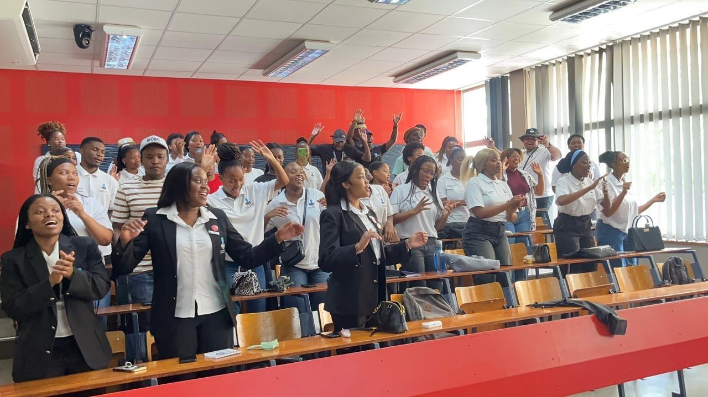
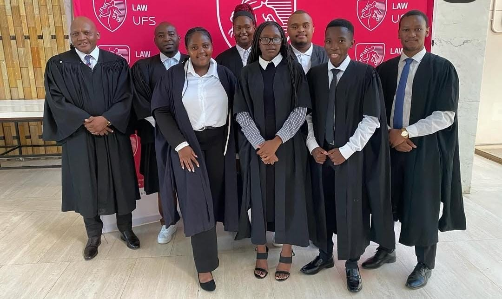
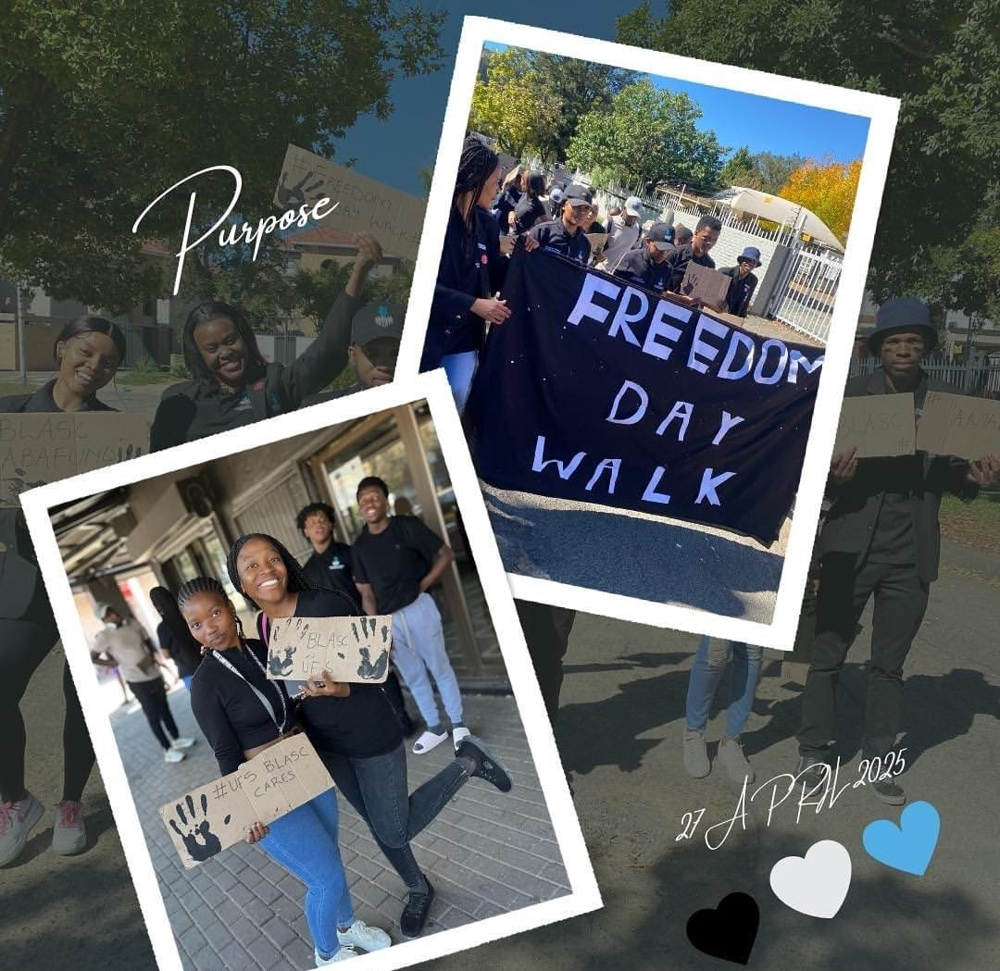
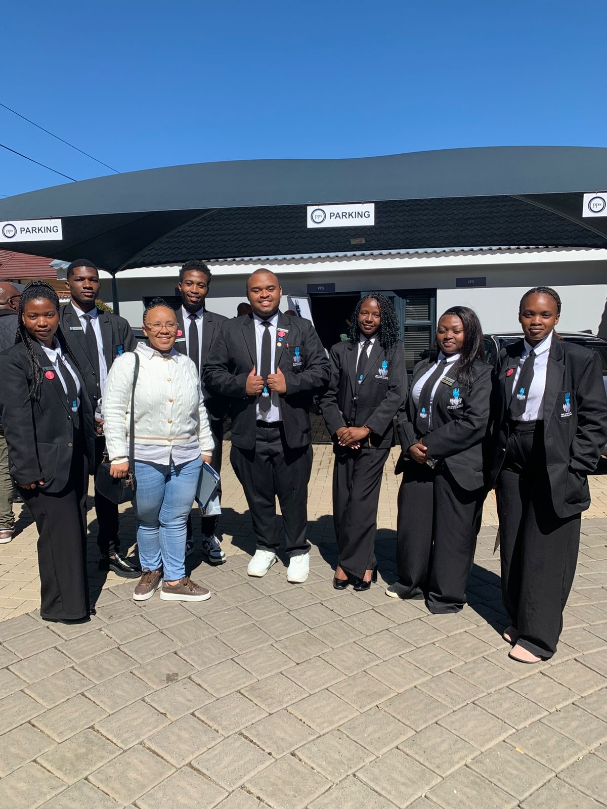
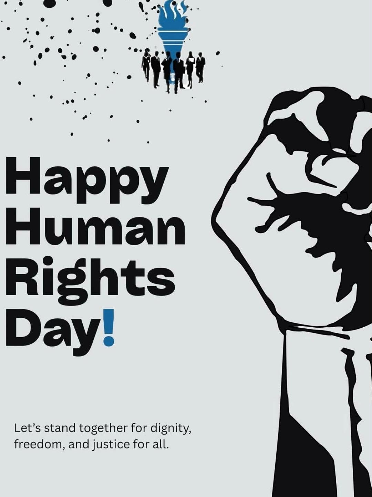

Engagement
Events
Chapter events, dialogues, outreach engagements, and commemorative activities that drive the BLASC UFS mission forward.

Engagement
Chapter events, dialogues, outreach engagements, and commemorative activities that drive the BLASC UFS mission forward.

The BLASC UFS Moot Court Competition simulates real court proceedings — inviting practising legal professionals to sit as judges while students argue their cases. It is one of the most important skill-building events the chapter runs.
Participants engage in authentic courtroom scenarios across different areas of law, developing critical competencies under real pressure from experienced practitioners.
The competition sharpens oral advocacy — the ability to argue clearly and confidently before a bench. It also develops research and drafting skills, requiring participants to build legally sound written arguments from scratch before presenting them in court. The combination of written and oral components mirrors real legal practice.
Enquire About Participation
Every year on 27 April, BLASC UFS takes to the streets to commemorate Freedom Day. The march is not merely symbolic — it is a deliberate act of reflection on the cost of freedom, what it took to get here, and why transformation must continue.
The 2025 march carried the theme "Purpose" — reflecting on what drives BLASC UFS members forward as future legal professionals in a society still working toward full transformation.
The Freedom Day March is also a community service activity — members engage with residents, distribute information about legal rights, and remind communities that the constitution belongs to all of us. It is one of the most unifying events in the BLASC UFS calendar.

BLASC UFS runs career events designed to help young legal minds navigate the world of work. These events are practical, industry-relevant, and tailored to the realities facing law graduates in South Africa.
Sessions include career readiness workshops, CV writing clinics, mock interview sessions, and panels featuring practising attorneys, advocates, prosecutors, and corporate lawyers. Events like the PPS partnership expose members to financial planning for young professionals.
The goal is simple: by the time a BLASC UFS member graduates, they should know exactly how to enter the profession and thrive in it.
Apply for Membership to Attend
BLASC UFS marks key days in the South African calendar with events that go beyond celebration — they are spaces for reflection, education, and action. These events connect our legal education to the lived realities of the people we will serve.
Women's Day events centre on the empowerment of women in the legal profession — celebrating how far we've come and addressing how much further we must go toward gender equality in law.
Youth Day events honour June 16 by engaging students on the history of youth activism in South Africa and challenging members to carry that torch forward through legal advocacy and civic engagement.
Partner with Us